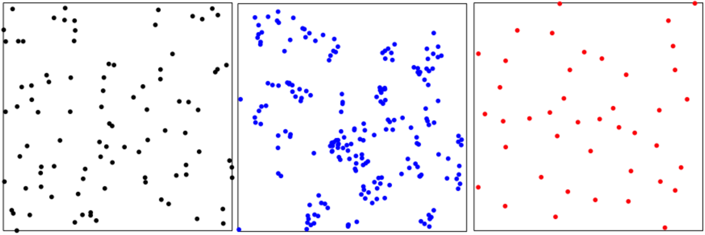

Point processes provide mathematical frameworks for modeling and analyzing randomly distributed collections of points in space. While the most commonly studied models are Poisson processes, where points are placed independently, many real-world phenomena require models that capture interactions between points.

Determinantal point processes (DPPs) are a particularly elegant class of models that exhibit repulsion between points. DPPs naturally arise in random matrix theory and have found applications in diverse areas including machine learning, where they are used to select diverse subsets from large data collections, and in physics, where they model fermion systems.
A key mathematical property of DPPs is that their conditional distributions remain DPPs. In joint work with Jesper Møller, we exploited this structure to quantify the repulsive nature of these processes: we showed that the effect of a point at a given location is to probabilistically "push out" one other point, with the distribution of the removed point determined by the associated kernel of the DPP.
Point process models also provide powerful tools for designing materials with tailored properties. In collaboration with researchers in photonics, we have demonstrated how different types of spatial arrangements—from deterministically aperiodic quasicrystals to various random configurations—can tune the optical response of plasmonic nanostructure arrays.
By systematically comparing quasicrystalline patterns, perturbed lattices (including Bernoulli point processes), negatively correlated arrangements (Strauss point processes), and positively correlated configurations (Log Gaussian Cox processes), we achieved two orders of magnitude of tunability in the spectral response of these materials. This work demonstrates how point process modeling can inform the design of optical devices for applications in photovoltaics, photosensing, and other optoelectronic technologies.
Read more about this research in JHU Engineering News →